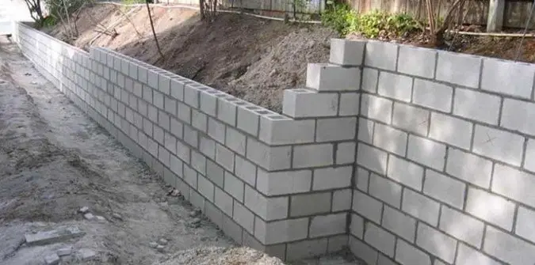
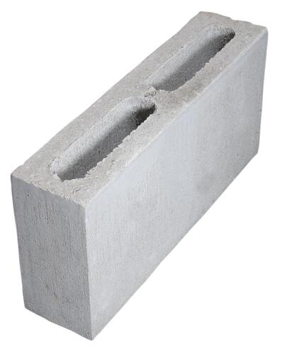
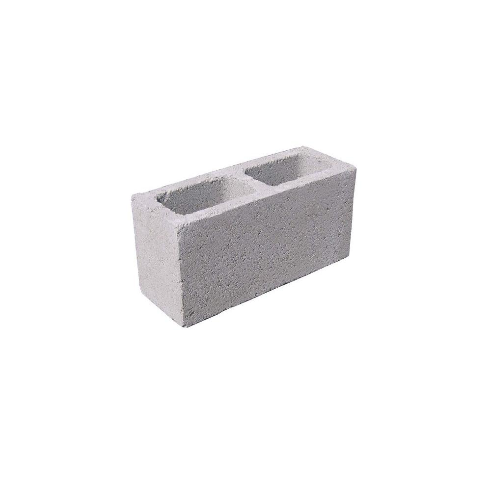
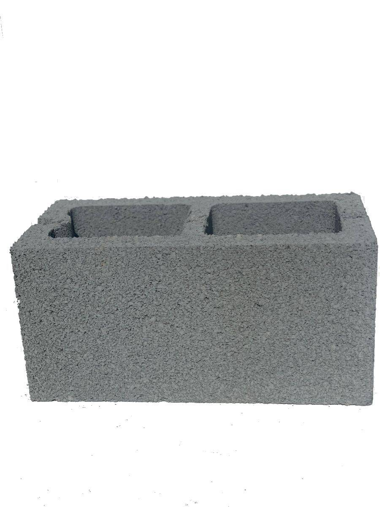
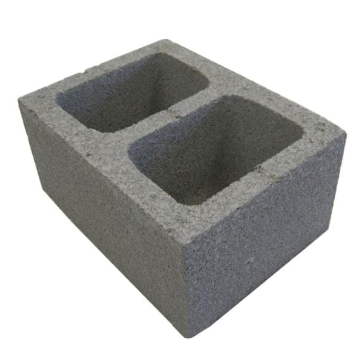

How to Build a Block Retainer Wall

But first, what is blocklaying?
Blocklaying — the art of building with concrete blocks. Blocklaying is one of the many manifestations of masonry: you can lay brick, stone, cultured stone, tiles. In the art of blocklaying, the mason binds two concrete blocks together using mortar. Blocks are primarily touted not for design purposes but for their structural integrity and strength. Blocklayers typically lay block for the foundations of residential homes and even large scale commercial buildings. Block is one of the most commonnly used materials for structural foundation, thus many blocklayers still exist today, building homes and commercial buildings.
The different sizes of block
| 4 Inch | 6 Inch | 8 Inch | 12 Inch |
|---|---|---|---|
|  |  |  |  |
| Used to build small scale garages, veneer walls, and also layed on top of preexistin 6 inch block for foundation. 4 Inch block is particularly hard to lay because of its light density. | Used to build garages, barns, sheds, etc. The "easiest" block to carry around. | Perhaps the "standard" block, 8 inch block is used for majority of house foundations and other larger scale structures. | Used primarily for very large commercial jobs, or jobs needing very strong foundation. Not fun to carry around. |
Complete steps for building your block retainer wall
- Figure out where your homes gas lines/wires are
- - call misdig and get a report on where your homes electrical and gas lines are running in the ground
- Mark out the area for your wall
- - Spray paint is helpful in this situation
- Hand-dig 42 inches below ground level
- - If you encounter concrete while digging, get yourself a pickaxe
- Mix ready-mix concrete
- - a small shovel will be much easier to mix with in the wheelbarrel
- Pour concrete into trench footing
- - This will take multiple rounds of mixing and pouring
- mix mortar and lay the first round of block
- - Give the concrete at least a few hours to cool before laying the block
- drill #4 bar every 3 holes
- - wait at least a day until the concrete has cured a bit
- Lay the remaining block until desired height
- - Depending on your preference, you may want to lay 2/3/4 courses of block for your retainer wall
- Mix up concrete an fill holes
- - For strength and extra reinforcement